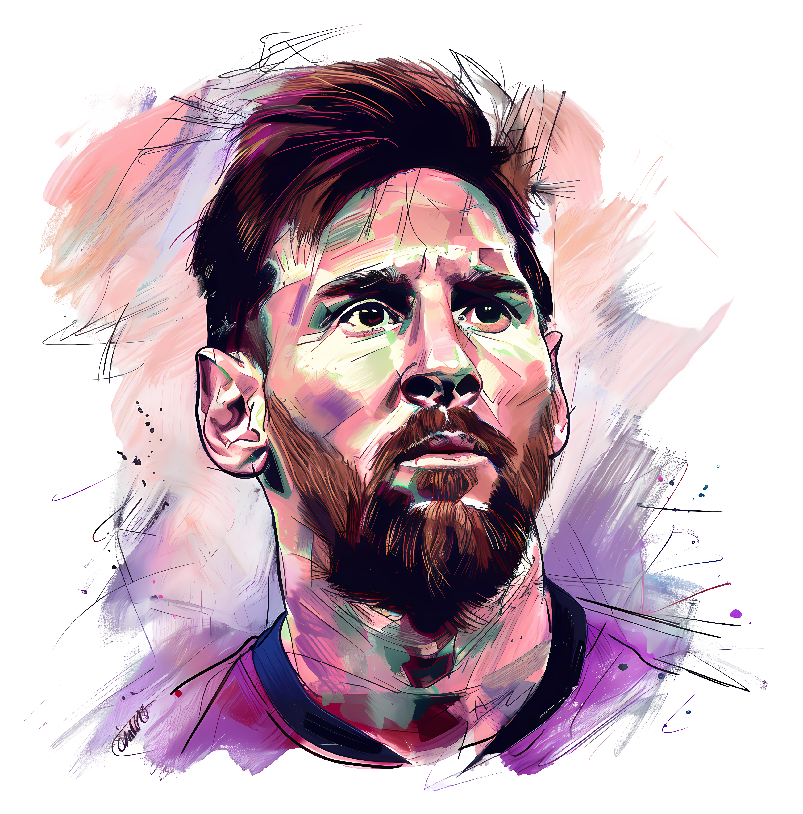

Dust of Some Pixels is the personal photography blog of visual storyteller and photographer Shifat. Dedicated to capturing everyday moments, landscapes, and quiet corners of the world, Shifat's style focuses on revealing the unexpected beauty hidden within the ordinary.
+880 1234-567890